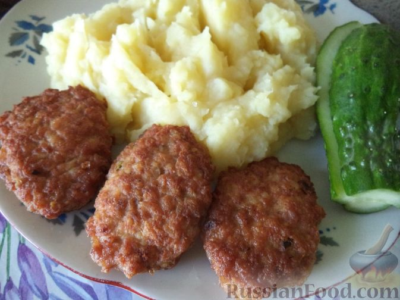

Быстрые котлеты из фарша
время приготовления 20 минут

Продукты для приготовления(6 порций)
- Фарш свино-говяжий - 600 г.
- Картофель средний - 2 шт.
- Яйца куриные - 4 шт.
- Майонез - 50 г.
- Мука - 2-3 ст. ложки
- Соль, перец - по вкусу
- Лук зеленый - 1 пучок
- Растительное масло (для жарки) - 30 г.
Пошаговый рецепт
- В миску поместить фарш.
- Помыть и порезать зеленый лук.
- Картофель почистить, помыть и натереть на мелкой терке.
- В миску к фаршу вбить куриные яйца.
- В миску добавить лук, картофель, посолить, поперчить.
- Хорошо перемешать. Добавить майонез и муку. Хорошо перемешать.
-
Разогреть сковороду. Налить растительное масло.
В горячее масло столовой ложкой выложить котлеты.
Жарить на среднем огне до золотистого цвета, 3-4 минуты.
- Затем перевернуть и так же жарить с другой стороны.
- Так пожарить все котлетки. Масло можно доливать по мере необходимости.
-
Быстрые котлеты из фарша готовы. Подавать с любимым гарниром
Приятного аппетита!
Ещё больше рецептов котлет